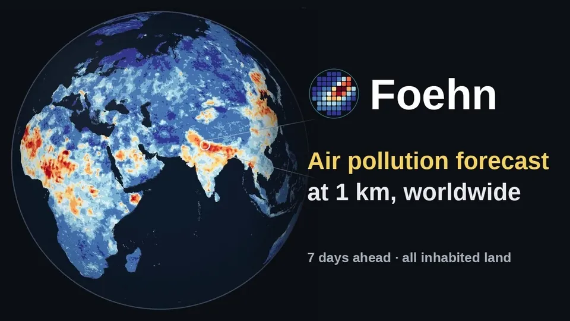
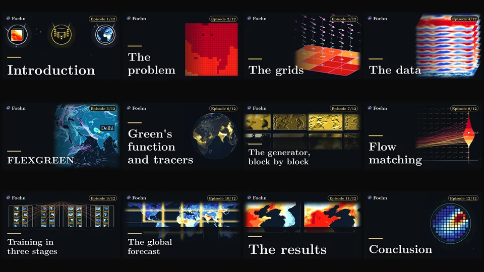
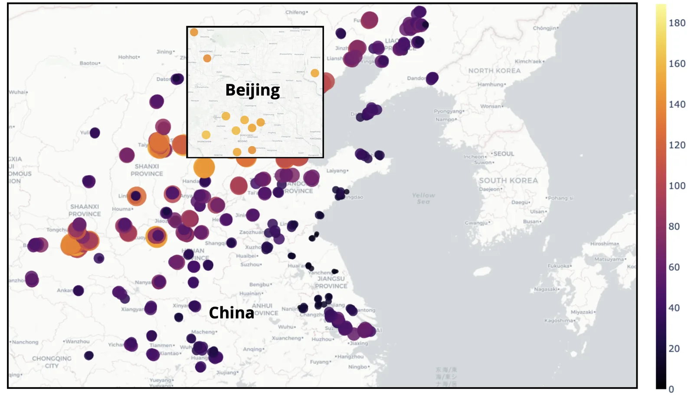
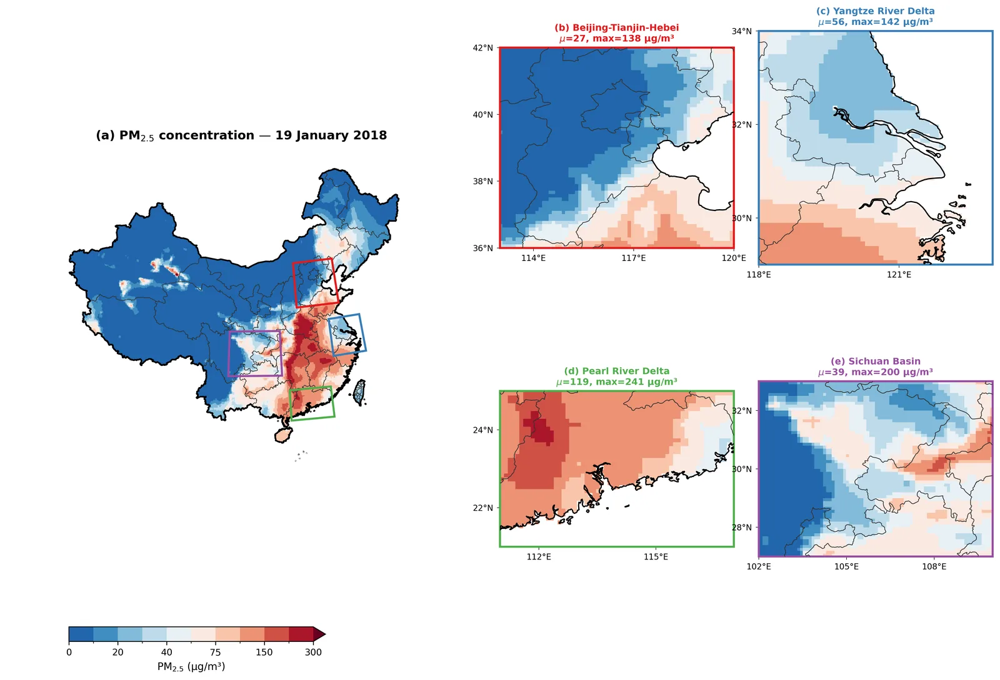
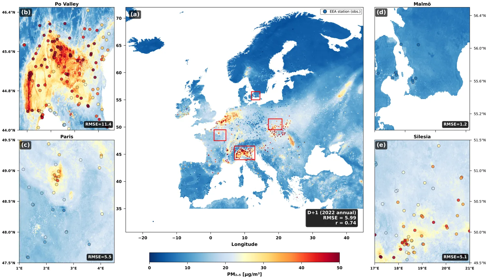
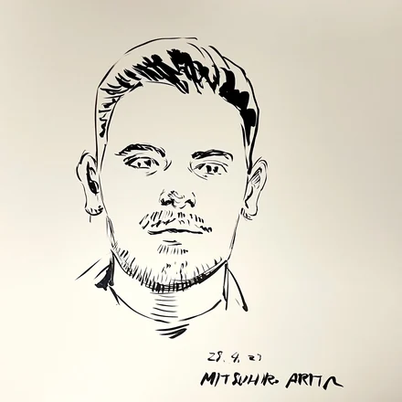

7:46Foehn in 8 minutes
From the particles you breathe to a forecast at 1 km, everywhere on Earth: the air traced backwards, the generator, the results.
01 Latest preprint · October 2026 · with Michael Boy and Zhi-Song Liu
Short-term exposure to fine particles accounts for about a million deaths a year, yet operational forecasts run on grids tens of kilometres wide, which hide the pollution breathed by nearly two hundred million people a day. Foehn, the model we present in this preprint, forecasts PM2.5 at 1 km over all inhabited land, up to a week ahead.

7:46From the particles you breathe to a forecast at 1 km, everywhere on Earth: the air traced backwards, the generator, the results.
02 Watch

12 animated episodes and a 44-minute film explain Foehn block by block, from the problem and the data to FLEXGREEN, the generator and the results.
03 Research
From sparse stations (AQ-Net, 2025) to physics-guided transformers (TopoFlow, 2026), 1 km over Europe (CRAN-PM, 2026) and the whole planet (Foehn, 2026).

SCIA 2025 · Springer LNCS AQ-Net Air-quality reanalysis for stations with and without sensors: LSTM with attention and a neural kNN (northern China). Read the case study
npj Clim. Atmos. Sci. · 2026 TopoFlow A terrain- and wind-aware Vision Transformer: PM2.5 RMSE of 9.71 µg/m³ over China, a 71–80 % improvement over operational forecasting systems. Read the case study
arXiv preprint · 2026 CRAN-PM A cross-resolution Vision Transformer that produces the 29-million-pixel European map at 1 km in 1.8 s on one GPU. Read the case study04 Papers
Global probabilistic forecasting of air pollution
Preprint arXiv:2610.25941, 2026. Lead author
Global 1 km forecasts of PM2.5 up to a week ahead; more accurate than the operational forecast at three stations in four (retrospective, 2022).
@misc{kheder2026foehn,
title = {Global probabilistic forecasting of air pollution},
author = {Kheder, Ammar and Boy, Michael and Liu, Zhi-Song},
year = {2026},
eprint = {2610.25941},
archivePrefix = {arXiv},
primaryClass = {cs.AI},
url = {https://arxiv.org/abs/2610.25941}
}TopoFlow: topography-aware pollutant Flow learning for high-resolution air quality prediction
Journal npj Climate and Atmospheric Science 9, 143, Nature Portfolio, 2026. Lead author
Terrain- and wind-aware Vision Transformer; PM2.5 RMSE 9.71 µg/m³ over China, a 71–80 % improvement over operational forecasting systems.
@article{kheder2026topoflow,
title = {TopoFlow: topography-aware pollutant flow learning for high-resolution air quality prediction},
author = {Kheder, Ammar and Toropainen, Helmi and Peng, Wenqing and Ant{\~a}o, Samuel and Chen, Jia and Boy, Michael and Liu, Zhi-Song},
journal = {npj Climate and Atmospheric Science},
volume = {9},
number = {1},
pages = {143},
year = {2026},
doi = {10.1038/s41612-026-01417-5}
}CRAN-PM: Cross-Resolution Attention Network for High-Resolution PM2.5 Prediction
Preprint arXiv:2603.11725, 2026. Lead author
Cross-resolution Vision Transformer: the 29-million-pixel European map at 1 km in 1.8 s on one GPU.
@misc{kheder2026cranpm,
title = {CRAN-PM: Cross-Resolution Attention Network for High-Resolution PM2.5 Prediction},
author = {Kheder, Ammar and Toropainen, Helmi and Peng, Wenqing and Ant{\~a}o, Samuel and Liu, Zhi-Song and Boy, Michael},
year = {2026},
eprint = {2603.11725},
archivePrefix = {arXiv},
url = {https://arxiv.org/abs/2603.11725}
}Inverse Neural Operator for ODE Parameter Optimization
Preprint arXiv:2603.11854, 2026.
Recovers hidden ODE parameters from sparse observations, 487× faster than iterative gradient descent.
Deep Spatio-Temporal Neural Network for Air Quality Reanalysis
Conference Scandinavian Conference on Image Analysis (SCIA), Springer LNCS, 2025. Lead author
Reanalysis of PM2.5 at stations with and without sensors, using a neural kNN (northern China).
@inproceedings{kheder2025aqnet,
title = {Deep Spatio-Temporal Neural Network for Air Quality Reanalysis},
author = {Kheder, Ammar and Foreback, Benjamin and Wang, Lili and Liu, Zhi-Song and Boy, Michael},
booktitle = {Scandinavian Conference on Image Analysis (SCIA)},
series = {Lecture Notes in Computer Science},
publisher = {Springer},
year = {2025},
doi = {10.1007/978-3-031-95911-0_6}
}05 Profile

I am a doctoral researcher in computational engineering at LUT University in Lahti, with the Atmospheric Modelling Centre (AMC-Lahti) and INAR, University of Helsinki, supervised by Prof. Michael Boy and Assoc. Prof. Zhi-Song Liu. I try to combine what physics tells us about how the air travels with what generative networks can learn from data. Alongside the PhD, I work as a freelance AI research expert with Mercor, where I build scientific data-analysis workflows used to train AI agents that operate computers.
I am lucky to run these models on the LUMI supercomputer, on up to 1,024 AMD MI250X GPUs. Before the PhD: MSc in Engineering (Big Data & AI) at EiCnam Paris, with a one-year apprenticeship at INRIA Bordeaux in the Mnemosyne team (Frédéric Alexandre, Nicolas Rougier).
Topics air quality, atmospheric modelling, generative models (flow matching), Lagrangian transport, physics-informed neural networks, vision transformers, high-performance computing, large-scale distributed training.
| 2026 – now | AI Research Expert (freelance) Mercor, San Francisco (remote) |
| 2024 – now | Junior Researcher & Teaching Assistant LUT University, Lahti, Finland |
| 2023 – 2026 | CEO, Wabel Group AI services and web development |
| 2021 – 2022 | Research Engineer (Apprenticeship) INRIA Bordeaux, Mnemosyne team |
| 2021 – 2023 | Volunteer Firefighter Sapeurs-pompiers des Deux-Sèvres |
| 2024 – now | Ph.D. Computational Engineering LUT University, Finland |
| 2021 – 2024 | MSc Engineering, Big Data & AI EiCnam Paris, with apprenticeship at INRIA Bordeaux |
| 2019 – 2021 | Bachelor, Data Science BUT Niort. Statistics, Big Data, Business Intelligence |
Beyond research volunteer firefighter, 2021–2023 · aeronautics initiation (BIA), 2016–17
Languages French and Arabic (native), English (fluent).
2026 IAC 2026, Xi’an (TopoFlow) · Boya Forum, Peking University (invited talk) · research visits to TUM and Inria ARCHES.
2025 SCIA, Reykjavík (AQ-Net, speed talk and poster) · EAC, Lecce (AQ-Net poster) · LUT Doctoral School Science Conference · visits to INRIA Bordeaux, École Polytechnique and Istanbul Technical University.
06 Recent